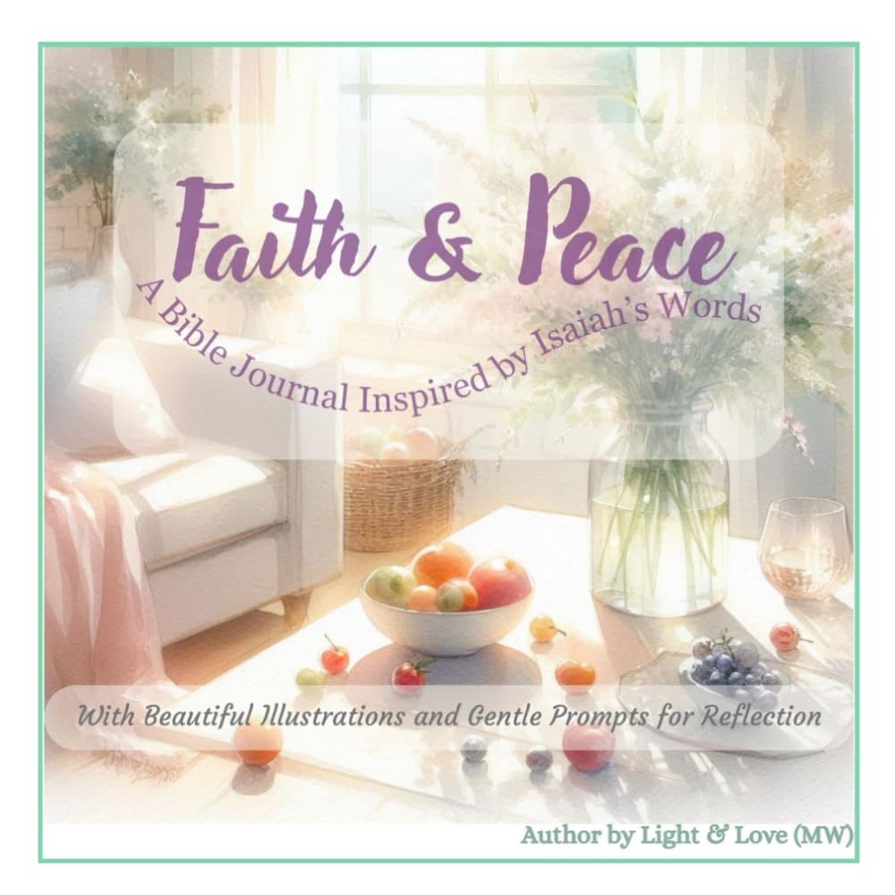

Faith & Peace: A Bible Journal Inspired by Isaiah’s Words: With Beautiful Illustrations and Gentle Prompts for Reflection
by Light & Love (MW) · Christian books, devotionals & inspirational gifts

Find peace, strength, and comfort through 40 powerful and easy-to-read verses from the book of Isaiah, paired with soft, dreamy illustrations. This Christian journal is perfect for quiet time, reflection, and building a deeper connection with God. Each page features: A comforting Bible verse (Isaiah) Soft watercolor-style artwork Lined space for your daily thoughts, prayers, or gratitude Encouraging quotes on…
Paperback · 84 pages